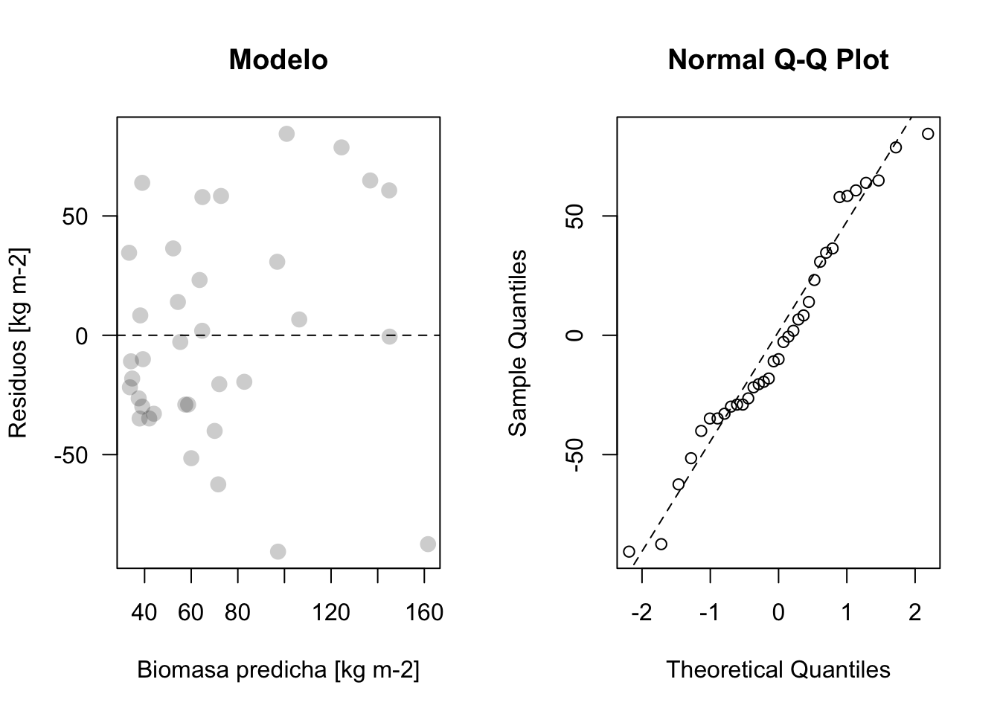

data <- read.table('data/Pantanillos.txt', header = T, sep = '')7 Validación de Modelos
7.1 Práctico
7.1.1 Explorar datos
Lectura de Datos
| XUTM | YUTM | LAT | LONG | BIOMAS | TM1 | TM2 | TM3 | TM4 | TM5 | TM7 | BRIGHT | GREEN | MOIST | NDVI | NDVIC | PEND | ALT | H |
|---|---|---|---|---|---|---|---|---|---|---|---|---|---|---|---|---|---|---|
| 744797.3 | 6071183 | -35.473 | -72.302 | 164.649 | 43 | 29 | 23 | 57 | 26 | 15 | 83.854 | -0.004 | -4.548 | 0.425 | 0.321 | 6.546 | 472.423 | 17.106 |
| 745007.3 | 6071183 | -35.473 | -72.300 | 88.663 | 48 | 36 | 37 | 66 | 53 | 32 | 109.035 | -9.390 | -29.607 | 0.282 | 0.141 | 17.793 | 491.138 | 2.838 |
| 744587.3 | 6071243 | -35.472 | -72.304 | 127.707 | 42 | 31 | 22 | 54 | 29 | 17 | 82.817 | -2.611 | -8.038 | 0.421 | 0.306 | 10.933 | 466.259 | 9.288 |
| 744797.3 | 6071363 | -35.471 | -72.302 | 203.209 | 43 | 29 | 23 | 62 | 28 | 15 | 87.794 | 3.431 | -5.745 | 0.459 | 0.338 | 15.306 | 497.456 | 13.273 |
| 745007.3 | 6071363 | -35.471 | -72.300 | 101.979 | 43 | 33 | 24 | 84 | 40 | 20 | 108.640 | 15.278 | -15.202 | 0.556 | 0.347 | 28.135 | 471.417 | 12.141 |
| 744587.3 | 6071423 | -35.471 | -72.304 | 185.372 | 44 | 29 | 22 | 53 | 27 | 16 | 81.422 | -2.956 | -5.942 | 0.413 | 0.308 | 18.362 | 484.353 | 9.874 |
Filtrar los datos
data2 <- data[,-c(1:4)]| BIOMAS | TM1 | TM2 | TM3 | TM4 | TM5 | TM7 | BRIGHT | GREEN | MOIST | NDVI | NDVIC | PEND | ALT | H |
|---|---|---|---|---|---|---|---|---|---|---|---|---|---|---|
| 164.649 | 43 | 29 | 23 | 57 | 26 | 15 | 83.854 | -0.004 | -4.548 | 0.425 | 0.321 | 6.546 | 472.423 | 17.106 |
| 88.663 | 48 | 36 | 37 | 66 | 53 | 32 | 109.035 | -9.390 | -29.607 | 0.282 | 0.141 | 17.793 | 491.138 | 2.838 |
| 127.707 | 42 | 31 | 22 | 54 | 29 | 17 | 82.817 | -2.611 | -8.038 | 0.421 | 0.306 | 10.933 | 466.259 | 9.288 |
| 203.209 | 43 | 29 | 23 | 62 | 28 | 15 | 87.794 | 3.431 | -5.745 | 0.459 | 0.338 | 15.306 | 497.456 | 13.273 |
| 101.979 | 43 | 33 | 24 | 84 | 40 | 20 | 108.640 | 15.278 | -15.202 | 0.556 | 0.347 | 28.135 | 471.417 | 12.141 |
| 185.372 | 44 | 29 | 22 | 53 | 27 | 16 | 81.422 | -2.956 | -5.942 | 0.413 | 0.308 | 18.362 | 484.353 | 9.874 |
Histograma de variable respuesta
# histograma de variable respuesta
hist(data$BIOMAS)7.2 Definición de Funciones
Función para scatterplot
# funcion para scatterplot
plot_prediction <- function(obs, pred, main=''){
x <- cbind(obs, pred)
plot(x, xlab = 'Biomasa observada [kg m-2]', ylab = 'Biomasa predicha [kg m-2]', pch=16, las=1,
xlim = c(min(x), max(x)), ylim = c(min(x), max(x)), main=main, col=rgb(0,0,0,0.2), cex=1.5)
abline(0,1, lty=2)
lm <- lm(pred ~ obs-1)
abline(lm)
legend('topleft', legend=c('Linea 1:1', 'Linea ajustada'), lty=c(1,2), bty = 'n')
# agregar metricas de ajuste de modelo
r2 <- round( (cor(pred, obs)^2), 2) # solo dos decimales con funcion round
NRMSE <- round((sqrt(mean((obs - pred)^2))/(max(obs) - min(obs))) * 100, 2) # RMSE normalizado
bias = round( (1-coef(lm))*-1, 2)
mtext(bquote(paste(r^2 == .(r2), ",", " %RMSE" == .(NRMSE), "%", ",", " bias" ==
.(bias))), side = 3, line = 0.5, adj = 0, font = 2)
}Visualización de Residuos
plot_residuos <- function(res, pred, main='Modelo'){
par(mfrow=c(1,2))
plot(pred, res, xlab = 'Biomasa predicha [kg m-2]', ylab = 'Residuos [kg m-2]', pch=16, las=1,
main=main, col=rgb(0,0,0,0.2), cex=1.5)
abline(h=0, lty=2)
qqnorm(res)
qqline(res, lty=2)
}7.3 Analisis
7.3.1 Análisis de Significancia de Corrección
corr <- cor(data2)
testRes = cor.mtest(data2, conf.level = 0.95) # matriz con valores de p
par(mfrow=c(1,1))
corrplot(corr, p.mat = testRes$p, type = 'lower', diag = FALSE) # X a las no sign. con p > 0.05cor(data2) # mejor variable segun cor es one_mean BIOMAS TM1 TM2 TM3 TM4 TM5
BIOMAS 1.00000000 -0.31361610 -0.3657966 -0.27179254 -0.46393079 -0.3594047
TM1 -0.31361610 1.00000000 0.9620088 0.95921101 0.09765849 0.9063002
TM2 -0.36579661 0.96200881 1.0000000 0.96123400 0.22164639 0.9364134
TM3 -0.27179254 0.95921101 0.9612340 1.00000000 0.04443123 0.9426152
TM4 -0.46393079 0.09765849 0.2216464 0.04443123 1.00000000 0.1900475
TM5 -0.35940473 0.90630018 0.9364134 0.94261521 0.19004752 1.0000000
TM7 -0.29321630 0.92326124 0.9328171 0.96913153 0.04712320 0.9762178
BRIGHT -0.46834630 0.87680231 0.9366557 0.87721991 0.50462364 0.9265610
GREEN 0.06247448 -0.84581862 -0.7924929 -0.89542924 0.39613113 -0.7977948
MOIST 0.32239600 -0.89367594 -0.9159402 -0.94344351 -0.10547874 -0.9939164
NDVI 0.11752383 -0.87593057 -0.8298394 -0.93068575 0.31098157 -0.8262571
NDVIC 0.27767911 -0.91453558 -0.8983385 -0.95949090 0.08793446 -0.9193543
PEND 0.10787286 -0.29088550 -0.2667467 -0.30306962 0.05054119 -0.1913806
ALT 0.06590560 -0.34638456 -0.2674291 -0.30541545 0.01988928 -0.2707978
H 0.60544860 -0.47942172 -0.4819355 -0.43697984 -0.31427651 -0.4823196
TM7 BRIGHT GREEN MOIST NDVI NDVIC
BIOMAS -0.2932163 -0.4683463 0.06247448 0.3223960 0.1175238 0.27767911
TM1 0.9232612 0.8768023 -0.84581862 -0.8936759 -0.8759306 -0.91453558
TM2 0.9328171 0.9366557 -0.79249292 -0.9159402 -0.8298394 -0.89833845
TM3 0.9691315 0.8772199 -0.89542924 -0.9434435 -0.9306857 -0.95949090
TM4 0.0471232 0.5046236 0.39613113 -0.1054787 0.3109816 0.08793446
TM5 0.9762178 0.9265610 -0.79779485 -0.9939164 -0.8262571 -0.91935429
TM7 1.0000000 0.8752779 -0.88290983 -0.9885743 -0.8979835 -0.94375520
BRIGHT 0.8752779 1.0000000 -0.59146405 -0.8891844 -0.6518289 -0.79086476
GREEN -0.8829098 -0.5914641 1.00000000 0.8369327 0.9869514 0.92129745
MOIST -0.9885743 -0.8891844 0.83693272 1.0000000 0.8556265 0.92978569
NDVI -0.8979835 -0.6518289 0.98695136 0.8556265 1.0000000 0.95917534
NDVIC -0.9437552 -0.7908648 0.92129745 0.9297857 0.9591753 1.00000000
PEND -0.2282007 -0.2052176 0.27841863 0.1905210 0.3166394 0.28910470
ALT -0.2832766 -0.2524166 0.28856127 0.2690036 0.3035372 0.30633676
H -0.4304685 -0.5347813 0.27232831 0.4517838 0.3362205 0.46368280
PEND ALT H
BIOMAS 0.10787286 0.06590560 0.60544860
TM1 -0.29088550 -0.34638456 -0.47942172
TM2 -0.26674670 -0.26742907 -0.48193548
TM3 -0.30306962 -0.30541545 -0.43697984
TM4 0.05054119 0.01988928 -0.31427651
TM5 -0.19138064 -0.27079776 -0.48231958
TM7 -0.22820067 -0.28327655 -0.43046847
BRIGHT -0.20521762 -0.25241661 -0.53478130
GREEN 0.27841863 0.28856127 0.27232831
MOIST 0.19052104 0.26900363 0.45178385
NDVI 0.31663942 0.30353719 0.33622053
NDVIC 0.28910470 0.30633676 0.46368280
PEND 1.00000000 0.19853031 0.38709465
ALT 0.19853031 1.00000000 0.07529796
H 0.38709465 0.07529796 1.00000000#corr7.3.2 Validación Cruzada
# separar en set de validacion y entrenamiento: Validacion cruzada simple!
set.seed(1234)
idx <- createDataPartition(data2$BIOMAS, p = 0.6, list = F)
length(idx)[1] 56idx %>% head() Resample1
[1,] 1
[2,] 5
[3,] 8
[4,] 9
[5,] 11
[6,] 12# 91*0.6 --> 54.6
# particionar los datos usando los datos generados
entrenar <- data2[idx, ] # 60% de los datos
validar <- data2[-idx, ] # 40% de los datos7.4 Regresiones
7.4.1 Regresiones Simples
lm1 <- lm(BIOMAS ~ H, data = entrenar)
summary(lm1)
Call:
lm(formula = BIOMAS ~ H, data = entrenar)
Residuals:
Min 1Q Median 3Q Max
-161.91 -31.59 -12.85 18.43 206.26
Coefficients:
Estimate Std. Error t value Pr(>|t|)
(Intercept) 32.623 11.265 2.896 0.00545 **
H 6.921 1.430 4.840 1.12e-05 ***
---
Signif. codes: 0 '***' 0.001 '**' 0.01 '*' 0.05 '.' 0.1 ' ' 1
Residual standard error: 56.64 on 54 degrees of freedom
Multiple R-squared: 0.3026, Adjusted R-squared: 0.2897
F-statistic: 23.43 on 1 and 54 DF, p-value: 1.125e-05Referecias para explicar los modelos en R: (“Explaining the Lm() Summary in R – Learn by Marketing” n.d.)
effect_plot(lm1, pred = H, interval = TRUE, plot.points = TRUE,
jitter = 0.05)lm2 <- glm(BIOMAS ~ H, data = entrenar, family = Gamma(link = "log"))
summary(lm2)
Call:
glm(formula = BIOMAS ~ H, family = Gamma(link = "log"), data = entrenar)
Deviance Residuals:
Min 1Q Median 3Q Max
-1.8159 -0.8806 -0.1909 0.3185 2.1156
Coefficients:
Estimate Std. Error t value Pr(>|t|)
(Intercept) 3.58884 0.17418 20.605 < 2e-16 ***
H 0.09849 0.02211 4.456 4.25e-05 ***
---
Signif. codes: 0 '***' 0.001 '**' 0.01 '*' 0.05 '.' 0.1 ' ' 1
(Dispersion parameter for Gamma family taken to be 0.7669877)
Null deviance: 58.130 on 55 degrees of freedom
Residual deviance: 43.909 on 54 degrees of freedom
AIC: 580.9
Number of Fisher Scoring iterations: 7effect_plot(lm2, pred = H, interval = TRUE, plot.points = TRUE,
jitter = 0.05)7.4.2 Regresión Multiple
## Regression multiple con todas las variables -----------------------------
lm3 <- lm(BIOMAS ~., data = entrenar)
summary(lm3)
Call:
lm(formula = BIOMAS ~ ., data = entrenar)
Residuals:
Min 1Q Median 3Q Max
-100.67 -31.30 -8.14 21.58 182.80
Coefficients:
Estimate Std. Error t value Pr(>|t|)
(Intercept) 4.993e+02 5.815e+02 0.859 0.395
TM1 9.320e+00 2.906e+01 0.321 0.750
TM2 1.533e+01 2.822e+01 0.543 0.590
TM3 1.866e+01 3.699e+01 0.504 0.617
TM4 -4.582e+00 3.919e+01 -0.117 0.908
TM5 -1.410e+00 3.274e+01 -0.043 0.966
TM7 -3.049e+00 2.650e+01 -0.115 0.909
BRIGHT -1.498e+01 5.023e+01 -0.298 0.767
GREEN 2.388e+01 4.312e+01 0.554 0.583
MOIST -1.232e+01 4.067e+01 -0.303 0.764
NDVI -1.204e+03 1.728e+03 -0.697 0.490
NDVIC 1.213e+03 8.425e+02 1.440 0.157
PEND -2.048e-01 1.008e+00 -0.203 0.840
ALT 1.759e-02 1.066e-01 0.165 0.870
H 3.802e+00 2.285e+00 1.664 0.104
Residual standard error: 57.21 on 41 degrees of freedom
Multiple R-squared: 0.4599, Adjusted R-squared: 0.2755
F-statistic: 2.494 on 14 and 41 DF, p-value: 0.01162effect_plot(lm3, pred = H, interval = TRUE, plot.points = TRUE,
jitter = 0.05)lm4 <- glm(BIOMAS ~., data = entrenar, family = Gamma(link = log))
summary(lm4)
Call:
glm(formula = BIOMAS ~ ., family = Gamma(link = log), data = entrenar)
Deviance Residuals:
Min 1Q Median 3Q Max
-1.4922 -0.7954 -0.1666 0.4182 1.5964
Coefficients:
Estimate Std. Error t value Pr(>|t|)
(Intercept) 11.099546 9.159715 1.212 0.2325
TM1 0.437576 0.457743 0.956 0.3447
TM2 0.384137 0.444555 0.864 0.3926
TM3 0.448039 0.582720 0.769 0.4464
TM4 -0.035895 0.617363 -0.058 0.9539
TM5 0.027237 0.515759 0.053 0.9581
TM7 -0.018001 0.417409 -0.043 0.9658
BRIGHT -0.503779 0.791271 -0.637 0.5279
GREEN 0.627758 0.679168 0.924 0.3607
MOIST -0.271592 0.640674 -0.424 0.6738
NDVI -20.985287 27.223143 -0.771 0.4452
NDVIC 15.108460 13.270804 1.138 0.2615
PEND 0.001204 0.015875 0.076 0.9399
ALT -0.001040 0.001679 -0.619 0.5391
H 0.080295 0.035993 2.231 0.0312 *
---
Signif. codes: 0 '***' 0.001 '**' 0.01 '*' 0.05 '.' 0.1 ' ' 1
(Dispersion parameter for Gamma family taken to be 0.8120839)
Null deviance: 58.13 on 55 degrees of freedom
Residual deviance: 36.52 on 41 degrees of freedom
AIC: 595.41
Number of Fisher Scoring iterations: 14effect_plot(lm4, pred = H, interval = TRUE, plot.points = TRUE,
jitter = 0.05)
7.4.3 Regresión multiple con seleccion de variables stepwise
Utilizando train() utilizanndo el método “lmStepAIC”, que va a buscar las conbinaciones de modelos lineales, simples, luego con dos, tres, etc., bajo el criterio AIC . (Kuhn n.d.)
lm5 <- train(BIOMAS ~., data = entrenar, method = "lmStepAIC")
lm5$finalModelEl objeto caret lm5 guarda perfectamente cual es el mejor modelo, y se puede usar directamente para predecir, etc. Pero no se lleva bein caret con las funciones anova, AIC, así que vamos a usar las mejores variables y a hacer otro modelo
lm5 <- lm(BIOMAS ~ TM3 + BRIGHT + NDVIC + H, data = entrenar)
summary(lm5)
Call:
lm(formula = BIOMAS ~ TM3 + BRIGHT + NDVIC + H, data = entrenar)
Residuals:
Min 1Q Median 3Q Max
-99.37 -30.51 -13.02 21.00 181.98
Coefficients:
Estimate Std. Error t value Pr(>|t|)
(Intercept) 105.909 147.888 0.716 0.47717
TM3 10.183 4.256 2.393 0.02045 *
BRIGHT -4.611 1.340 -3.441 0.00116 **
NDVIC 487.008 305.084 1.596 0.11660
H 3.954 1.717 2.303 0.02538 *
---
Signif. codes: 0 '***' 0.001 '**' 0.01 '*' 0.05 '.' 0.1 ' ' 1
Residual standard error: 52.46 on 51 degrees of freedom
Multiple R-squared: 0.435, Adjusted R-squared: 0.3907
F-statistic: 9.818 on 4 and 51 DF, p-value: 5.74e-06effect_plot(lm5, pred = H, interval = TRUE, plot.points = TRUE,
jitter = 0.05)Family: Gamma(link = log)
lm6 <- train(BIOMAS ~., data = entrenar, method = "glmStepAIC", family = Gamma(link = log))
lm6$finalModellm6 <- glm(BIOMAS ~ TM3 + BRIGHT + H, data = entrenar, family = Gamma(link = "log"))
effect_plot(lm6, pred = H, interval = TRUE, plot.points = TRUE,
jitter = 0.05)
7.5 Información de modelos
summary(lm1)
Call:
lm(formula = BIOMAS ~ H, data = entrenar)
Residuals:
Min 1Q Median 3Q Max
-161.91 -31.59 -12.85 18.43 206.26
Coefficients:
Estimate Std. Error t value Pr(>|t|)
(Intercept) 32.623 11.265 2.896 0.00545 **
H 6.921 1.430 4.840 1.12e-05 ***
---
Signif. codes: 0 '***' 0.001 '**' 0.01 '*' 0.05 '.' 0.1 ' ' 1
Residual standard error: 56.64 on 54 degrees of freedom
Multiple R-squared: 0.3026, Adjusted R-squared: 0.2897
F-statistic: 23.43 on 1 and 54 DF, p-value: 1.125e-05summary(lm2)
Call:
glm(formula = BIOMAS ~ H, family = Gamma(link = "log"), data = entrenar)
Deviance Residuals:
Min 1Q Median 3Q Max
-1.8159 -0.8806 -0.1909 0.3185 2.1156
Coefficients:
Estimate Std. Error t value Pr(>|t|)
(Intercept) 3.58884 0.17418 20.605 < 2e-16 ***
H 0.09849 0.02211 4.456 4.25e-05 ***
---
Signif. codes: 0 '***' 0.001 '**' 0.01 '*' 0.05 '.' 0.1 ' ' 1
(Dispersion parameter for Gamma family taken to be 0.7669877)
Null deviance: 58.130 on 55 degrees of freedom
Residual deviance: 43.909 on 54 degrees of freedom
AIC: 580.9
Number of Fisher Scoring iterations: 7summary(lm3)
Call:
lm(formula = BIOMAS ~ ., data = entrenar)
Residuals:
Min 1Q Median 3Q Max
-100.67 -31.30 -8.14 21.58 182.80
Coefficients:
Estimate Std. Error t value Pr(>|t|)
(Intercept) 4.993e+02 5.815e+02 0.859 0.395
TM1 9.320e+00 2.906e+01 0.321 0.750
TM2 1.533e+01 2.822e+01 0.543 0.590
TM3 1.866e+01 3.699e+01 0.504 0.617
TM4 -4.582e+00 3.919e+01 -0.117 0.908
TM5 -1.410e+00 3.274e+01 -0.043 0.966
TM7 -3.049e+00 2.650e+01 -0.115 0.909
BRIGHT -1.498e+01 5.023e+01 -0.298 0.767
GREEN 2.388e+01 4.312e+01 0.554 0.583
MOIST -1.232e+01 4.067e+01 -0.303 0.764
NDVI -1.204e+03 1.728e+03 -0.697 0.490
NDVIC 1.213e+03 8.425e+02 1.440 0.157
PEND -2.048e-01 1.008e+00 -0.203 0.840
ALT 1.759e-02 1.066e-01 0.165 0.870
H 3.802e+00 2.285e+00 1.664 0.104
Residual standard error: 57.21 on 41 degrees of freedom
Multiple R-squared: 0.4599, Adjusted R-squared: 0.2755
F-statistic: 2.494 on 14 and 41 DF, p-value: 0.01162summary(lm4)
Call:
glm(formula = BIOMAS ~ ., family = Gamma(link = log), data = entrenar)
Deviance Residuals:
Min 1Q Median 3Q Max
-1.4922 -0.7954 -0.1666 0.4182 1.5964
Coefficients:
Estimate Std. Error t value Pr(>|t|)
(Intercept) 11.099546 9.159715 1.212 0.2325
TM1 0.437576 0.457743 0.956 0.3447
TM2 0.384137 0.444555 0.864 0.3926
TM3 0.448039 0.582720 0.769 0.4464
TM4 -0.035895 0.617363 -0.058 0.9539
TM5 0.027237 0.515759 0.053 0.9581
TM7 -0.018001 0.417409 -0.043 0.9658
BRIGHT -0.503779 0.791271 -0.637 0.5279
GREEN 0.627758 0.679168 0.924 0.3607
MOIST -0.271592 0.640674 -0.424 0.6738
NDVI -20.985287 27.223143 -0.771 0.4452
NDVIC 15.108460 13.270804 1.138 0.2615
PEND 0.001204 0.015875 0.076 0.9399
ALT -0.001040 0.001679 -0.619 0.5391
H 0.080295 0.035993 2.231 0.0312 *
---
Signif. codes: 0 '***' 0.001 '**' 0.01 '*' 0.05 '.' 0.1 ' ' 1
(Dispersion parameter for Gamma family taken to be 0.8120839)
Null deviance: 58.13 on 55 degrees of freedom
Residual deviance: 36.52 on 41 degrees of freedom
AIC: 595.41
Number of Fisher Scoring iterations: 14summary(lm5)
Call:
lm(formula = BIOMAS ~ TM3 + BRIGHT + NDVIC + H, data = entrenar)
Residuals:
Min 1Q Median 3Q Max
-99.37 -30.51 -13.02 21.00 181.98
Coefficients:
Estimate Std. Error t value Pr(>|t|)
(Intercept) 105.909 147.888 0.716 0.47717
TM3 10.183 4.256 2.393 0.02045 *
BRIGHT -4.611 1.340 -3.441 0.00116 **
NDVIC 487.008 305.084 1.596 0.11660
H 3.954 1.717 2.303 0.02538 *
---
Signif. codes: 0 '***' 0.001 '**' 0.01 '*' 0.05 '.' 0.1 ' ' 1
Residual standard error: 52.46 on 51 degrees of freedom
Multiple R-squared: 0.435, Adjusted R-squared: 0.3907
F-statistic: 9.818 on 4 and 51 DF, p-value: 5.74e-06summary(lm6)
Call:
glm(formula = BIOMAS ~ TM3 + BRIGHT + H, family = Gamma(link = "log"),
data = entrenar)
Deviance Residuals:
Min 1Q Median 3Q Max
-1.7612 -0.7162 -0.1862 0.3547 1.6836
Coefficients:
Estimate Std. Error t value Pr(>|t|)
(Intercept) 6.79928 1.37938 4.929 8.82e-06 ***
TM3 0.05952 0.02484 2.396 0.02021 *
BRIGHT -0.04705 0.01781 -2.641 0.01088 *
H 0.07821 0.02458 3.182 0.00247 **
---
Signif. codes: 0 '***' 0.001 '**' 0.01 '*' 0.05 '.' 0.1 ' ' 1
(Dispersion parameter for Gamma family taken to be 0.6614027)
Null deviance: 58.130 on 55 degrees of freedom
Residual deviance: 39.293 on 52 degrees of freedom
AIC: 577.95
Number of Fisher Scoring iterations: 6Plot de diagnostico
par(mfrow=c(2,2))
plot(lm1)plot(lm2)plot(lm3)plot(lm4)plot(lm5)plot(lm6)
7.6 Validación Independientes
7.6.1 Predicción
pred1 <- predict(lm1, validar, type = 'response')
pred2 <- predict(lm2, validar, type = 'response')
pred3 <- predict(lm3, validar, type = 'response')
pred4 <- predict(lm4, validar, type = 'response')
pred5 <- predict(lm5, validar, type = 'response')
pred6 <- predict(lm6, validar, type = 'response')7.6.2 R^2
postResample(validar$BIOMAS, pred1) RMSE Rsquared MAE
44.4093971 0.4945806 36.5128797 postResample(validar$BIOMAS, pred2) RMSE Rsquared MAE
47.5393225 0.4190765 37.4912978 postResample(validar$BIOMAS, pred3) RMSE Rsquared MAE
41.9033685 0.5493197 33.2810130 postResample(validar$BIOMAS, pred4) RMSE Rsquared MAE
51.073834 0.503803 36.899949 postResample(validar$BIOMAS, pred5) RMSE Rsquared MAE
42.2525620 0.5466302 35.0206725 postResample(validar$BIOMAS, pred6) RMSE Rsquared MAE
44.5042861 0.5289186 32.5334253 7.6.3 Plot de valores predichos vs observados
par(mfrow=c(1,2))
plot_prediction(validar$BIOMAS, pred1, main='lm simple') # nuestra funcion
plot_prediction(validar$BIOMAS, pred2, main='GLM simple')plot_prediction(validar$BIOMAS, pred3, main='lm todo')
plot_prediction(validar$BIOMAS, pred4, main='GLM todo')plot_prediction(validar$BIOMAS, pred5, main='lm seleccion')
plot_prediction(validar$BIOMAS, pred6, main='GLM deleccion')7.6.4 Residuos
res1 <- validar$BIOMAS - pred1
res2 <- validar$BIOMAS - pred2
res3 <- validar$BIOMAS - pred3
res4 <- validar$BIOMAS - pred4
res5 <- validar$BIOMAS - pred5
res6 <- validar$BIOMAS - pred67.6.5 Plot de residuos
Los observados vs los predichos
plot_residuos(res1, pred1) # nuestra funcion
plot_residuos(res2, pred2)plot_residuos(res3, pred3)plot_residuos(res4, pred4)plot_residuos(res5, pred5)plot_residuos(res6, pred6)7.6.6 Histrogramas
par(mfrow=c(1,2))
hist(res1, main = 'lm simple')
hist(res2, main = 'GLM simple')hist(res3, main = 'lm todo')
hist(res4, main = 'GLM todo')hist(res5, main = 'lm seleccion')
hist(res6, main = 'GLM seleccion')7.6.7 Shapiro Test
H0 -> dist. normal H1 -> dist. no normal
shapiro.test(res1)
Shapiro-Wilk normality test
data: res1
W = 0.96422, p-value = 0.3049shapiro.test(res2)
Shapiro-Wilk normality test
data: res2
W = 0.94851, p-value = 0.102shapiro.test(res3)
Shapiro-Wilk normality test
data: res3
W = 0.97745, p-value = 0.6747shapiro.test(res4) # no normal
Shapiro-Wilk normality test
data: res4
W = 0.90988, p-value = 0.007368shapiro.test(res5)
Shapiro-Wilk normality test
data: res5
W = 0.97574, p-value = 0.6182shapiro.test(res6) # no normal
Shapiro-Wilk normality test
data: res6
W = 0.92007, p-value = 0.014327.6.8 Significancia de las diferencias
anova(lm1,lm2,lm3,lm4,lm5, lm6) # diferencias entre gaussianosAnalysis of Variance Table
Model 1: BIOMAS ~ H
Model 2: BIOMAS ~ H
Model 3: BIOMAS ~ TM1 + TM2 + TM3 + TM4 + TM5 + TM7 + BRIGHT + GREEN +
MOIST + NDVI + NDVIC + PEND + ALT + H
Model 4: BIOMAS ~ TM1 + TM2 + TM3 + TM4 + TM5 + TM7 + BRIGHT + GREEN +
MOIST + NDVI + NDVIC + PEND + ALT + H
Model 5: BIOMAS ~ TM3 + BRIGHT + NDVIC + H
Model 6: BIOMAS ~ TM3 + BRIGHT + H
Res.Df RSS Df Sum of Sq F Pr(>F)
1 54 173261
2 54 44 0 173217
3 41 134181 13 -134137
4 41 37 0 134144
5 51 140355 -10 -140319 4.2876 0.0004042 ***
6 52 39 -1 140316
---
Signif. codes: 0 '***' 0.001 '**' 0.01 '*' 0.05 '.' 0.1 ' ' 1Sería al menos 1 es diferentes o significato, no necesariamente es el 5
AIC(lm1, lm2, lm3, lm4, lm5, lm6) df AIC
lm1 3 615.0045
lm2 3 580.9045
lm3 16 626.6902
lm4 16 595.4066
lm5 6 609.2097
lm6 5 577.9501Se puede estar en desacuerdo con esto, todo depende de su objetivo, el modelo 6 (lm6) es parsimonioso, pero no el que da mejores resultados.
RSS: Df:
7.7 Mejor modelo con re-muestreo
usamos caret para definir un tipo de metodo de re-muestreo para entrenar modelos mas robustos.
savePredictions = TRUE = nos va a guardar los daos internamente en el modelo validacion K-fold, con K=5, y 5 repeticiones aleatoreas
control <- trainControl(method = "repeatedcv",
number = 5, # K
repeats = 5,
savePredictions = TRUE)Usar mejor modelos agregamos el parametro trControl que nos permite pasar la informacion del tipo de vadilacion cruzada a usar todos los datos, no solo los de entrenar, ya que las particiones se hacen internamente.
7.7.1 Entrenar Modelos con cv
Modelos 7
## efecto cantidad de variables en validaciones mas robustas!
lm7 <- train(BIOMAS ~.,
method = "glm",
data = data2,
family = Gamma(link = log),
trControl = control)
summary(lm7)
Call:
NULL
Deviance Residuals:
Min 1Q Median 3Q Max
-1.5663 -0.8534 -0.1446 0.3204 1.6855
Coefficients:
Estimate Std. Error t value Pr(>|t|)
(Intercept) 7.765e+00 5.666e+00 1.370 0.174567
TM1 4.150e-01 3.397e-01 1.222 0.225644
TM2 2.603e-01 3.413e-01 0.763 0.448091
TM3 4.301e-01 4.224e-01 1.018 0.311786
TM4 -3.962e-01 4.897e-01 -0.809 0.420965
TM5 1.045e-01 3.933e-01 0.266 0.791257
TM7 9.071e-02 3.147e-01 0.288 0.773926
BRIGHT -2.014e-01 6.218e-01 -0.324 0.746916
GREEN 8.252e-01 5.001e-01 1.650 0.103039
MOIST -7.137e-02 4.807e-01 -0.148 0.882373
NDVI -1.987e+01 1.913e+01 -1.039 0.302292
NDVIC 1.530e+01 1.014e+01 1.508 0.135579
PEND -7.538e-03 1.199e-02 -0.629 0.531550
ALT -2.434e-04 1.169e-03 -0.208 0.835610
H 8.856e-02 2.510e-02 3.528 0.000714 ***
---
Signif. codes: 0 '***' 0.001 '**' 0.01 '*' 0.05 '.' 0.1 ' ' 1
(Dispersion parameter for Gamma family taken to be 0.7076406)
Null deviance: 95.048 on 90 degrees of freedom
Residual deviance: 55.750 on 76 degrees of freedom
AIC: 937.46
Number of Fisher Scoring iterations: 11Modelo 6
lm8 <- train(BIOMAS ~ TM3 + BRIGHT + H, # los determinados por el train de lm6
method = "glm",
data = data2,
family = Gamma(link = log),
trControl = control)
summary(lm8)
Call:
NULL
Deviance Residuals:
Min 1Q Median 3Q Max
-1.7172 -0.8079 -0.1219 0.3163 1.8271
Coefficients:
Estimate Std. Error t value Pr(>|t|)
(Intercept) 6.56495 1.02006 6.436 6.46e-09 ***
TM3 0.05896 0.01869 3.154 0.002210 **
BRIGHT -0.04554 0.01333 -3.417 0.000965 ***
H 0.08557 0.01904 4.495 2.14e-05 ***
---
Signif. codes: 0 '***' 0.001 '**' 0.01 '*' 0.05 '.' 0.1 ' ' 1
(Dispersion parameter for Gamma family taken to be 0.6453826)
Null deviance: 95.048 on 90 degrees of freedom
Residual deviance: 61.377 on 87 degrees of freedom
AIC: 925.12
Number of Fisher Scoring iterations: 67.7.2 Datos de ajuste internos de cada iteración
lm7$resample RMSE Rsquared MAE Resample
1 42.08596 0.55062712 34.34071 Fold1.Rep1
2 164.24473 0.11760861 93.04358 Fold2.Rep1
3 62.70291 0.36601711 44.95314 Fold3.Rep1
4 53.79932 0.25253642 39.66982 Fold4.Rep1
5 82.24359 0.20767591 60.84382 Fold5.Rep1
6 64.45791 0.22995763 39.02619 Fold1.Rep2
7 170.00849 0.07854019 82.37425 Fold2.Rep2
8 43.10085 0.42965684 35.63650 Fold3.Rep2
9 39.07610 0.57550108 33.40203 Fold4.Rep2
10 89.18437 0.13761200 72.19029 Fold5.Rep2
11 64.32318 0.54899375 42.86009 Fold1.Rep3
12 73.58456 0.40000220 54.21211 Fold2.Rep3
13 46.76064 0.54345393 38.59701 Fold3.Rep3
14 31.23562 0.64675677 26.76364 Fold4.Rep3
15 158.51760 0.17864936 89.69632 Fold5.Rep3
16 152.52734 0.15959130 77.79163 Fold1.Rep4
17 41.18393 0.48586434 29.45265 Fold2.Rep4
18 61.27450 0.45782888 38.05745 Fold3.Rep4
19 66.67338 0.31925216 49.10811 Fold4.Rep4
20 52.02723 0.48809468 40.18278 Fold5.Rep4
21 48.76703 0.52934030 37.69387 Fold1.Rep5
22 64.96093 0.26812830 45.72222 Fold2.Rep5
23 61.23993 0.39640010 42.70253 Fold3.Rep5
24 110.39498 0.07262132 63.72854 Fold4.Rep5
25 55.79810 0.49990714 41.85867 Fold5.Rep57.7.3 Visualización
Visualización de R^2
par(mfrow=c(1,2))
boxplot(lm7$resample[,2], main ='R2 todo', ylim = c(0,1))
abline(h = median(lm7$resample[,2]), lty = 2, col = "red")
boxplot(lm8$resample[,2], main ='R2 (TM3 + BRIGHT + H)', ylim = c(0,1))
abline(h = median(lm8$resample[,2]), lty = 2, col = "red")Visualización de RMSE
par(mfrow=c(1,2))
boxplot(lm7$resample[,1], main ='RMSE todo', ylim = c(20,120))
abline(h = median(lm7$resample[,1]), lty = 2, col = "red")
boxplot(lm8$resample[,1], main ='RMSE (TM3 + BRIGHT + H)', ylim = c(20,120))
abline(h = median(lm8$resample[,1]), lty = 2, col = "red")En este caso tenemos una sitribución de datos
7.7.4 Observados vs predichos
# lm7$pred
par(mfrow=c(1,2))
obs7 <- lm7$pred[,2]
pred7 <- lm7$pred[,1]
plot(obs7, pred7, pch = 16, col = rgb(0,0.5,0,0.3)) # red, green, blue, alpha
abline(0, 1, lty = 2, col = "red") # intercepto, pendiente
lm <- lm(pred7 ~ obs7 - 1)
abline(lm)
legend('topleft', legend=c('Linea 1:1', 'Linea ajustada'), lty = c(2,1),
col = c("red", "black"), bty = 'n')
obs8 <- lm8$pred[,2]
pred8 <- lm8$pred[,1]
plot(obs8, pred8, pch = 17, col = rgb(0,0,0.5,0.3))
abline(0, 1, lty = 2, col = "red")
lm <- lm(pred8 ~ obs8 - 1)
abline(lm)
legend('topleft', legend=c('Linea 1:1', 'Linea ajustada'), lty = c(2,1),
col = c("red", "black"), bty = 'n')EN el Eje x son fijas las predicciones, mientras que en las prediccionesn pueden variar.